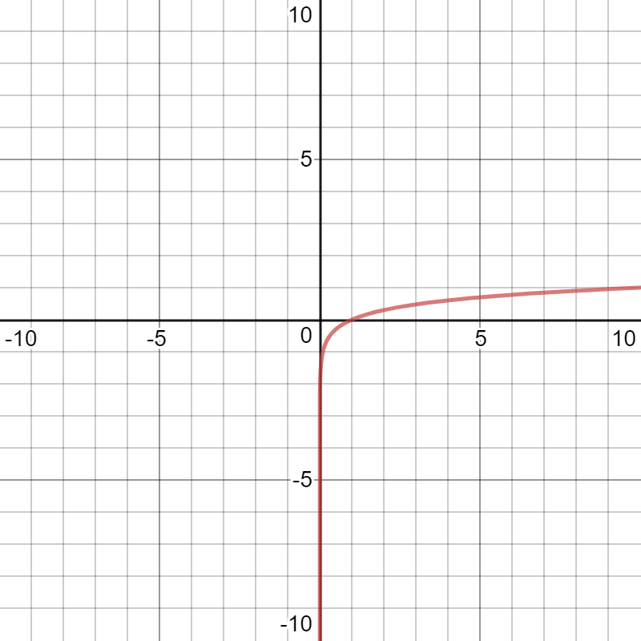

Logarithm
1. What is Log?
Just like how division/multiplication and addition/subtraction are reversals of each other, logarithms are reversals of exponents.
logax = b
is the same as
ab = x
is the same as
ab = x
The function of log is to find out what exponent the base you have is raised to in order to equal the answer (more on components of log in the next section).
1.1. Parts of Log
logax = b
The components of log are:
- The exponent. This is what you are raising the base to.
- The base. What is being raised to the power of a.
- The answer. ab gives the answer x.
1.2. Bases
If log is written plainly as loga = x without a base specified, it is defaulted to a base of 10. loga = x is the same as log10a = x Most calculators are unable to calculate log bases other than 10. In order to solve questions such as log3A = 6 or log53 = x, the equation must be rewritten with the base being 10.
2. Log Rules
Logarithms have a set of rules to simplify intimidating equations into a more manageable one, just like with exponents. There are a few basic rules:|
logaB + logaC = loga(B × C)
log(Bn) = n × logB |
loga(ad) = d logaB - logaC = loga(B/C) |
3. Log Graphs
f(x) = alog(kx- d) + c

Where:
a = Vertical stretch.
k = Horizontal stretch.
d = Horizontal translation.
c = Vertical translation.
Standard log graphs have a vertical asymptote at x = 0, as x is never able to be negative.